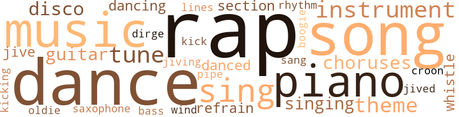
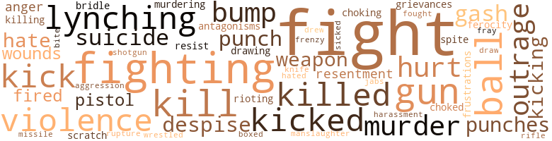
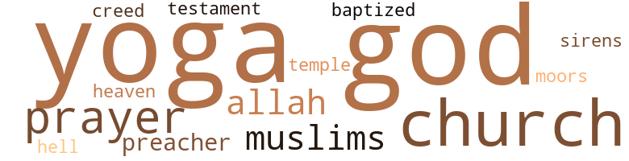

Tragic Magic, by Brown, Wesley (1978)
111 music-related terms matched in this text.
Most frequent terms in this topic: rap (12); song (11); dance (11); music (7); piano (6)
bass.n.07
Definition: the member with the lowest range of a family of musical instruments
| word | sentence |
|---|---|
| bass | Accompanying him were a bass guitar , horns , a harp , and then . . . Male and female were slung over one another as if they 'd been wounded in action , each thinking they were in the arms of a medic . |
boogie.n.01
Definition: an instrumental version of the blues (especially for piano)
| word | sentence |
|---|---|
| boogie | About two years after the incident with Tonya I was called by the United States government to fulfill my military obligations by protecting it against all boogie men , both foreign and domestic . |
chorus.n.01
Definition: any utterance produced simultaneously by a group
| word | sentence |
|---|---|
| choruses | This statement was developed in a solo by the tenor saxophone player Paul Gonsalves , who played for twenty-seven straight choruses . |
| choruses | Pops said that every one of the choruses that Gonsalves played was a reshuffling of the same old same old , and that the significance of creating twenty-seven possibilities for the way things could go down turned everybody 's head around to the extent that after listening nobody could say , " Tell me something I do n't already know , " but would have to say , " Oh , yeah ? " |
croon.v.01
Definition: sing softly
| word | sentence |
|---|---|
| croon | Oh , they say some people long ago were searching for a different tune , one that they could croon as only they can . |
dance.n.01
Definition: an artistic form of nonverbal communication
| word | sentence |
|---|---|
| dances | Watching them made me wonder about the origin of such dances as the Bop , Philly Dog , Boogaloo , Boston Monkey , Shing-a-ling , Skate , Fat Man , Push and Pull , Funky Chicken , and Penguin . |
| dance | Maybe a dance is like an idea whose time has come . |
| dance | And then , before something that was nobody 's business becomes everybody 's business , the new dance is good news in some unsuspecting soul 's muscles and joints . |
| dances | It struck me that a possible strategy for the race lay in the unpredictable way dances whistle-stop from city to city . |
| dance | If those who had an idea would n't tell until it was tapped into their backbones , then it would make more sense to everybody because the idea , like a dance , would be a permanent fixture in their lives . |
| dance | In keeping with my analysis , watching those kids dance began to trigger movement in me . |
| dance | " What do you want to do , Melvin , dance or lead ? " |
| dance | Well , before I had a chance to close the gap , Marcy grabs my hand and says , ' Let 's dance . ' |
dance.v.03
Definition: skip, leap, or move up and down or sideways
| word | sentence |
|---|---|
| dance | Do you remember at that freedom high when you asked me to dance ? |
| dance | " All I did was ask you to dance . " |
| dancing | The music began again and dancing moves burned a mean path south of the waist . |
| dance | If I got a nay there too , I would continue asking women to dance ; after each refusal I would make like a visiting dignitary , thanking them for making my stay a pleasant one . |
| danced | I danced with Alice on the next record . |
| dance | Maybe never having been asked to dance had something to do with it . |
| dance | But as the saying goes : If you dance to the music , you got to pay to the piper . |
| danced | And she 's probably drugged cause she thought if she danced with him , he would take her somewhere . |
| dancing | Throwing up his hands , the smaller of the two men began dancing for position and then fired a right-hand punch , catching his man flush on the temple . |
dirge.n.01
Definition: a song or hymn of mourning composed or performed as a memorial to a dead person
| word | sentence |
|---|---|
| dirge | Why was n't there a dirge in my slide for Otis ? |
disco.n.01
Definition: popular dance music (especially in the late 1970s); melodic with a regular bass beat; intended mainly for dancing at discotheques
| word | sentence |
|---|---|
| disco | " If you want to come , " Alice said , " some of us are going to a disco later on at this place downtown called La Mag-nifique . " |
| disco | I told my folks I was going to see Otis at his job and then go to a disco . |
| disco | " Alice and Pauline told me about this disco called La Magnifique ! |
guitar.n.01
Definition: a stringed instrument usually having six strings; played by strumming or plucking
| word | sentence |
|---|---|
| guitar | A few feet away a short , chunky man holding a guitar was sitting on a milk crate against the side of a building . |
| guitar | Accompanying him were a bass guitar , horns , a harp , and then . . . Male and female were slung over one another as if they 'd been wounded in action , each thinking they were in the arms of a medic . |
| guitar | In an alley leading away from the courtyard a man was sitting on a milk crate playing a guitar . |
jive.v.01
Definition: dance to jive music; dance the jive
| word | sentence |
|---|---|
| jived | " If brothers knew that if they shucked and jived , the sisters would n't get up off any cat food , they would get their shit together in a hurry and be putting messages on community bulletin boards documenting their righteous behavior ... So I 'm glad the brother has exposed himself as a Gunga Din for everyone to see . . . Now , I 'd like to move on to the business of drawing up a petition to present to the Registrar 's office . " |
| jiving | " Were you jiving when you said you pledged for the Gentlemen of Quality ? " |
| jive | The problem is when your shuffle do n't jive with your deal . |
kick.v.04
Definition: kick a leg up
| word | sentence |
|---|---|
| kick | And I bet I 'll kick you in your balls so hard you 'll think it 's the World Series ! " |
| kicking | The boy who had done the kicking stood his ground while the other boy advanced on him with the broken bottle . |
music.n.01
Definition: an artistic form of auditory communication incorporating instrumental or vocal tones in a structured and continuous manner
| word | sentence |
|---|---|
| music | The music began again and dancing moves burned a mean path south of the waist . |
| music | It looked like a reunion of the old Ivy League set who once wore cardigan sweaters , desert boots or penny loafers , dug the music of Herbie Mann and Johnny Pacheco , subscribed to Esquire magazine , went to Coattails on Thursday nights at City College , partied at the Kappa House , went on the Q boatride every year , and had gone to schools like Central State , Hampton Institute , and Virginia Union . |
| music | But as the saying goes : If you dance to the music , you got to pay to the piper . |
| music | However , in this instance you assumed correctly . . . and I take it since you came to me you 're not going to leave the country but are staying to face the music ? |
| music | " You play music in here ? " |
| music | As usual when the dorm began to get to me , I hightailed it for the music room , where Shoob - bee Doobbee would be playing records . |
| music | The room doubled as the place that beamed music to every dormitory and cellblock in the prison . |
musical_instrument.n.01
Definition: any of various devices or contrivances that can be used to produce musical tones or sounds
| word | sentence |
|---|---|
| instrument | " I know I ca n't undo what 's already been done , but now that I 've begun to experience black pain I am ready to be the instrument for whatever is required by The Movement . " |
| instrument | " Well , I filed for conscientious-objector status on the grounds that an analysis of America shows that the armed forces are an instrument used to extend the American empire . " |
| instruments | The reeds and the wind instruments , backed up by the piano , loud the bass like it ai n't no big thing . |
| instrument | My problem remains what it has always been : the inability to turn my aggression into a methodical instrument of destruction . |
| instrument | " You play an instrument , Shoobbee ? " |
oldie.n.01
Definition: a song that was formerly popular
| word | sentence |
|---|---|
| oldie | " I Only Have Eyes for You , " an oldie by the Flamingos , had just come on and was causing a stampede of dudes in the direction of all available women . |
piano.n.01
Definition: a keyboard instrument that is played by depressing keys that cause hammers to strike tuned strings and produce sounds
| word | sentence |
|---|---|
| piano | Pops had played pretty good stride piano when he was younger , but an accident to his left hand at the factory where he worked halted his ambition to become a musician . |
| piano | The reeds and the wind instruments , backed up by the piano , loud the bass like it ai n't no big thing . |
| piano | Miles ' tricky-lipping slurs pose as threats , but the piano is insistent on the comeback chord : " I do n't want to hear it . |
| piano | The tenor man takes his solo out , murder-mouthing the " so what " piano chord . |
| piano | But the piano man ai n't impressed , saying , in so many words , " Yeah , I hear you , but ai n't nobody put their hands on me . " |
| piano | So the answer is still " So What , " with the ax men going along with the piano man 's chord ... So what . . . So what ... So what . . . " You understand what I 'm trying to say ? " |
pipe.n.04
Definition: a tubular wind instrument
| word | sentence |
|---|---|
| pipe | He whoops and hollers for a fair shake for the Indians so he can get a chance to suck on the peace pipe when it 's passed around . |
rap.n.05
Definition: genre of African-American music of the 1980s and 1990s in which rhyming lyrics are chanted to a musical accompaniment; several forms of rap have emerged
| word | sentence |
|---|---|
| rap | To explain what 1 mean , Keith McDermott will rap to you . " |
| rap | Because they 're just words . . . " We all left the stadium without a word , heeding Theo 's admonition not to give up any rap unless it was followed by some political punch . |
| rap | But by the time Keith committed revolutionary suicide my rap was no longer the foil for disorder I once believed it was . |
| rap | " I wanted to ask him about the words to that song but he did n't want to rap . " |
| rap | " Yeah , he do n't rap to nobody that ai n't in his set ... f fey , I know this bar we can go to that 's right near here . |
| rap | " Hey , my rap always downshifts on Friday cause I steady spends the weekend in the passing gear . " |
| Rap | " I 'm Sir Rap a Lot and it 's time for me to get a shot at the limelight . |
| Rap | We 've heard from Sir Rap a Lot , but since he had some difficulty talking with his mouth full of whatever he was trying to say , maybe you 'd like to speak on the topic of ' Trouble Is a Man ' ! " |
| rap | " What do you want to rap about , Otis ? " |
| Rap | " Well , as you can see , " he said , pointing to photographs on the walls of himself and famous black political figures , " I 've represented the spectrum from Malcolm to Rap to Huey ... So the only thing I want to be sure of is : Are you prepared to go to jail ? " |
| rap | Charlie Chan and Birmingham are on a bus trip in search of two dudes named Plessy and Ferguson , who are believed to be running an organization called ' Separate but Equal Unlimited , ' which is really a front for an international syndicate that manufactures and distributes trick bags and sleight-of-hand gadgets . . . " Plessy and Ferguson are believed to be on the bus , so in an attempt to find out who they are , Birmingham cops a squat in the front and goes into what he calls his ' indefinite routine , ' where he talks to himself and then interrupts himself with some off-the-wall rap from a second party who is not present . |
| rap | Miles shapes his rap into spitting fancy lipwork , but the piano player is right back on time with an answer : " You do n't understand . . . " " So what ! " |
| rap | The bass line reenters the rap , giving a synopsis of the theme with fat plucks on the string . |
| rap | The next day I ate all my meals alone and did n't have any rap for him when he came around . |
| rap | I just thought I 'd come over here and get a change of pace from all the rap in the donn . " |
refrain.n.01
Definition: the part of a song where a soloist is joined by a group of singers
| word | sentence |
|---|---|
| refrain | And he was surprised to find that more and more after one of his assertions I would not follow up with a refrain but with a theme of my own . |
| choruses | And that it was only by trading choruses with the vamp of the blues that I would ever learn that freedom is staying loose when time is tight . |
| refrain | And you hear the brass knuckles rattling in his tone as the tenor man is all up in the face of the refrain , " So what ! " |
rhythm.n.04
Definition: the arrangement of spoken words alternating stressed and unstressed elements
| word | sentence |
|---|---|
| rhythm | They only had the rhythm so they started swaying to and fro . |
sax.n.02
Definition: a single-reed woodwind with a conical bore
| word | sentence |
|---|---|
| saxophone | This statement was developed in a solo by the tenor saxophone player Paul Gonsalves , who played for twenty-seven straight choruses . |
section.n.01
Definition: a self-contained part of a larger composition (written or musical)
| word | sentence |
|---|---|
| section | There were about ten of us in the orchestra section . |
| section | " Here 's the John Wayne section , " Otis said when we reached the last level . |
sing.v.02
Definition: produce tones with the voice
| word | sentence |
|---|---|
| sing | Then the man began to sing . |
| sang | The authority with which he sang those lyrics made my skin shiver . |
| sing | " I just sing the song . |
| sing | " Hey , Otis , remember when we used to sing in the bathroom at school ? " |
| Sing | Trouble is a man a man who loves me no more , no more " Sing the song , Gloria ! |
| Sing | Sing the song ! " one said . |
| Sing | Sing the shoulda , woulda , coulda blues , girl ! " |
singing.n.01
Definition: the act of singing vocal music
| word | sentence |
|---|---|
| singing | I want to ask you something about that song you were singing . " |
| singing | While he 's treading water , Woody Strode , the black cat in Sergeant Rutledge , paddles by in a canoe singing a blues : ' Everybody wants to go to heaven / but nobody wants to die/Everybody wants to know the rea-son/but never get past why . ' " |
| singing | " Excuse me , I want to ask you about that song you were singing . " |
song.n.01
Definition: a short musical composition with words
| word | sentence |
|---|---|
| song | He moved like a torch singer , using his body to make the lyrics of a song do something there were no words for . |
| song | I really want to give white folks the benefit of the doubt on the reasons for their vanishing act because it would be a drag if they split just to get away from , as the song goes , we people who are darker than blue . |
| song | It was a battle between the fear of the thumbs-down bad finger from the crowd , and the counter-punching shock from within when , as Ray Charles says , I saw what playing to the grandstand did to my song . |
| song | I want to ask you something about that song you were singing . " |
| song | " I just sing the song . |
| song | " I wanted to ask him about the words to that song but he did n't want to rap . " |
| song | I pushed my way into the room where most of the dancing was going on and was boxed in by a contact high of body heat and song . |
| song | Trouble is a man a man who loves me no more , no more " Sing the song , Gloria ! |
| song | Sing the song ! " one said . |
| song | " Excuse me , I want to ask you about that song you were singing . " |
| song | The sheets of the bed hissed under us as our stomachs made a click song , and sweat washed up against the shore of our ribs . |
swing.n.05
Definition: a style of jazz played by big bands popular in the 1930s; flowing rhythms but less complex than later styles of jazz
| word | sentence |
|---|---|
| jive | Dudes will try to give you things and get you involved in a lot of jive conversation ... It 's all a setup to turn you out . |
theme.n.03
Definition: (music) melodic subject of a musical composition
| word | sentence |
|---|---|
| theme | And he was surprised to find that more and more after one of his assertions I would not follow up with a refrain but with a theme of my own . |
| theme | The opening statement of the theme by a full orchestra speaks of bad news , and the bass whispers , '' Did you hear that ? " |
| theme | The bass line reenters the rap , giving a synopsis of the theme with fat plucks on the string . |
| theme | A version of the opening statement of the theme to " So What " played in my head . |
tune.n.01
Definition: a succession of notes forming a distinctive sequence
| word | sentence |
|---|---|
| tunes | Whenever someone white said anything to us , we would either ignore them or create mental brick walls by answering with the names of Thelonious Monk tunes like " Little Rootie Tootie , " " Straight , No Chaser , " " Well , You Need n't , " " Epistrophy , " " Off Minor , " " Ruby , My Dear , " " Crepuscule with Nellie , " and " ' Round Midnight . " |
| tune | According to my father , this style was embodied in an Ellington tune entitled " Diminuendo and Crescendo in Blue , " and was on the album Ellington at Newport 1956 . |
| lines | I 'm glad you 're thinking along those lines , Melvin . . . You did n't tell Miz Cotton where you were , did you ? " |
| tune | Oh , they say some people long ago were searching for a different tune , one that they could croon as only they can . |
| tune | The side on the record player sounded like a Thelonious Monk tune . |
| tune | No matter how many times you heard the tune , you just had to hear them do it " one more time . " |
whistle.v.01
Definition: make whistling sounds
| word | sentence |
|---|---|
| whistle | Then a whistle blew and the disc jockey chimed in over the microphone : " Come on , bloods , do n't bleed . |
| whistle | They make catcalls and whistle . |
wind_instrument.n.01
Definition: a musical instrument in which the sound is produced by an enclosed column of air that is moved by the breath
| word | sentence |
|---|---|
| wind | The reeds and the wind instruments , backed up by the piano , loud the bass like it ai n't no big thing . |
129 violence-related terms matched in this text.
Most frequent terms in this topic: fight (17); fighting (6); gun (4); violence (4); kicked (4)
abrasion.n.01
Definition: an abraded area where the skin is torn or worn off
| word | sentence |
|---|---|
| scratch | And that I would a sent her some candy but I did n't have enough scratch . |
affray.n.02
Definition: a noisy fight
| word | sentence |
|---|---|
| fray | Otis moved away from me and into the fray . |
aggression.n.01
Definition: a disposition to behave aggressively
| word | sentence |
|---|---|
| aggression | My problem remains what it has always been : the inability to turn my aggression into a methodical instrument of destruction . |
anger.n.01
Definition: a strong emotion; a feeling that is oriented toward some real or supposed grievance
| word | sentence |
|---|---|
| anger | His mouth was a reckless gash with lethal doses of anger jerking at the edge of his voice . |
box.v.03
Definition: engage in a boxing match
| word | sentence |
|---|---|
| boxed | I pushed my way into the room where most of the dancing was going on and was boxed in by a contact high of body heat and song . |
bridle.v.01
Definition: anger or take offense
| word | sentence |
|---|---|
| bridle | She had always been much more of a fighter than I was , resisting any unjustified attempts to bridle her . |
bump.n.01
Definition: a lump on the body caused by a blow
| word | sentence |
|---|---|
| bumps | Below his confused display of black hair was a face rioting with bumps from some disturbance going on underneath the skin . |
| bumps | Remember to keep in mind that all we 're trying to do is prepare you for a world where nobody accidentally bumps into anyone else . " |
| bump | Only thing is , you ca n't let folks get too close cause the slightest bump will crack your shell and show you as the raw recruit you are . |
contemn.v.01
Definition: look down on with disdain
| word | sentence |
|---|---|
| despise | " It also , " Theo interjected , " keeps a vigil over our consciousness by not allowing us to become what we despise . " |
| despise | " So having been a witness to this , we should no longer be legally or morally bound to obey laws which we have had no say in shaping and which seek to arrest our struggle . . . There are those who would counsel us in restraint and in the danger of becoming what we despise . |
craze.n.02
Definition: state of violent mental agitation
| word | sentence |
|---|---|
| frenzy | She reached between my legs and as I swelled she sucked and cowlickcd me into a frenzy . |
cut.n.05
Definition: a wound made by cutting
| word | sentence |
|---|---|
| gash | His mouth was a reckless gash with lethal doses of anger jerking at the edge of his voice . |
| gash | I looked at it and there was a deep gash in my palm caked with blood . |
draw.v.23
Definition: pull (a person) apart with four horses tied to his extremities, so as to execute him
| word | sentence |
|---|---|
| drawing | " If brothers knew that if they shucked and jived , the sisters would n't get up off any cat food , they would get their shit together in a hurry and be putting messages on community bulletin boards documenting their righteous behavior ... So I 'm glad the brother has exposed himself as a Gunga Din for everyone to see . . . Now , I 'd like to move on to the business of drawing up a petition to present to the Registrar 's office . " |
| draw | I try not to draw attention to myself by averting my eyes whenever they rest on him longer than a glance . |
| drew | Surprised by iny sudden move , Loretta drew up , bracing herself . |
ferocity.n.01
Definition: the property of being wild or turbulent
| word | sentence |
|---|---|
| ferocity | She had a reputation for fighting with such ferocity and abandon that even boys who were older were not willing to tangle with her . |
fight.n.02
Definition: the act of fighting; any contest or struggle
| word | sentence |
|---|---|
| fighting | As a result of the fighting , the " No Vietnamese Ever Called Me a Nigger " Caucus was banned from campus . |
| Fighting | Look , here 's They Were Expendable , The Fighting Seabees , Back to Bataan , and Sands of Iwo Jima . |
fight.n.05
Definition: a boxing or wrestling match
| word | sentence |
|---|---|
| fight | After the fight with Keith , Theo cultivated an even more sinister " do n't - fuck-with-me-honky-cause-I 'm - liable-to-have-a-trick-up-my-sleeve-and-take-your-head " look . |
| fight | " But what do you mean by fight ? " |
| fight | One afternoon a fight broke out in the laundry room between two blacks . |
fight.v.02
Definition: fight against or resist strongly
| word | sentence |
|---|---|
| fight | So if you really wan na fight for your freedom , make an investment in a book of matches , set yourself on fire , and jump on President Johnson ! " |
| fighting | She had a reputation for fighting with such ferocity and abandon that even boys who were older were not willing to tangle with her . |
| fight | Cause I 'm ready to fuck or fight . |
| fighting | You 're fighting back . " |
| fight | " You like to fight , do n't you ? " |
| fights | She fights all the time . " |
| fighting | " I 'm sorry but I have no alternative but to sentence you to three years of hard labor at the state camp for fucking and fighting . |
| fight | During your term of incarceration you will be trained in the fine art of close-order knuckle drill , since the court believes that before you can fuck , you have to be able to fight . |
| fight | " I did n't feel I had anything to fight for . " |
| fight | " You remember what I said at that party when you asked me if I liked to fight ? " |
| fight | If I ca n't fight with whoever I 'm with , I 'd rather be alone . " |
| fight | For a long time I did n't care enough about myself to fight for the way I wanted to live . |
| fight | It 's taken me a while to come out of that , but now I 'm at the point where I 'm not going to use myself up anymore with men I do n't care enough about to fight with . |
| fight | I like you , Melvin , but we wo n't get along if you do n't fight or try to stop me from fighting . " |
| fighting | I like you , Melvin , but we wo n't get along if you do n't fight or try to stop me from fighting . " |
| fighting | But I figured I had done enough fighting for a while and did n't know if I had the energy to get conjugated with her . |
| fight | And here you come , not a mark on you , lookin just as tender as you wan na be , talkin bout you do n't wan na fight in no war . |
| fought | I wonder what it would have taken for me to have fought that dude . |
| fight | " I do n't wan na fight , " she said . |
| fight | " You think you too good to fight , eh ? " |
| fight | I just do n't wan na fight . " |
frustration.n.03
Definition: a feeling of annoyance at being hindered or criticized
| word | sentence |
|---|---|
| frustrations | What followed was the spirited rhubarb atmosphere of a baseball game where enough punches are thrown for everyone to work out his frustrations before calmer heads are allowed to prevail . |
gag.v.06
Definition: cause to retch or choke
| word | sentence |
|---|---|
| choking | They are part of the official uniform of oppression , lynching people to stifling jobs and choking their identity . |
| choked | Furniture and order choked every room . |
grudge.n.01
Definition: a resentment strong enough to justify retaliation
| word | sentence |
|---|---|
| grievances | But this is a luxury indulged in by those who do not live the reality of our grievances . |
gun.n.01
Definition: a weapon that discharges a missile at high velocity (especially from a metal tube or barrel)
| word | sentence |
|---|---|
| gun | The woman was transfixed as Theo pointed a menacing finger at her as if it were a gun barrel . |
| gun | That 's why you do n't mind letting blacks be in the vanguard , doing the funky robot into the sights of those guards in the gun towers . |
| guns | Both had their hands within short reach of their guns . |
| gun | " Yeah , drop your gun and cover your mouth . " |
| gun | If you are a cowboy and you get into trouble , you use a gun . |
harassment.n.01
Definition: a feeling of intense annoyance caused by being tormented
| word | sentence |
|---|---|
| harassment | Alice took the harassment in stride , but this only made her tormentors sharpen their signifying jabs . |
hate.v.01
Definition: dislike intensely; feel antipathy or aversion towards
| word | sentence |
|---|---|
| hate | Nothing good to say about him Still I hate a day without him " You chewin my cabbage now , girl ! " |
| hated | " Maybe that 's what 's been bothering me - knowing that I hated him all those years we were supposed to be so tight . |
| hate | They hate bullskating in themselves and everybody else . |
hostility.n.02
Definition: a state of deep-seated ill-will
| word | sentence |
|---|---|
| antagonisms | " Because the only way to work out antagonisms between blacks and whites is to confront them . |
indignation.n.01
Definition: a feeling of righteous anger
| word | sentence |
|---|---|
| outrage | I do n't really know why I followed him , but I think it had something to do with the way his outrage recomposed itself in a word design that x-rayed his hole cards . |
| outrage | Once his pain is my own , there should be such outrage in me that it would require that I do something to alleviate that condition . |
| outrage | And I felt guilty about being unable to keep my outrage up to the level of the horrors recounted in the book . |
jab.n.02
Definition: a quick short straight punch
| word | sentence |
|---|---|
| jabs | Alice took the harassment in stride , but this only made her tormentors sharpen their signifying jabs . |
kick.v.04
Definition: kick a leg up
| word | sentence |
|---|---|
| kick | And I bet I 'll kick you in your balls so hard you 'll think it 's the World Series ! " |
| kicking | The boy who had done the kicking stood his ground while the other boy advanced on him with the broken bottle . |
kick_back.v.02
Definition: spring back, as from a forceful thrust
| word | sentence |
|---|---|
| kicked | A faraway howling wind kicked up in my ear , became a growl , and then shaped itself into a human voice . |
| kicked | They kicked back from each other with the recoil of a high-powered rifle and contented themselves with calling each other out of their names before things quieted down . |
| kicked | " You know , I almost kicked that dude in his family jewels . |
| kicked | If that had a been me I would a kicked that muthafucka to death . |
| kicking | I was led to a door which had printed on it : wolf tickets and ass kicking . |
| kick | " It proves that in the dark the ones who kick ass are those who bring the most ass . " |
| kick | Nobody will ever kiss your ass unless you kick theirs first . |
| kick | I had failed to kick ass and take names . |
kill.v.10
Definition: cause the death of, without intention
| word | sentence |
|---|---|
| killed | When Malcolm was killed , a memorial service was held in Lewisohn Stadium . |
| killed | Many have asked why Malcolm was killed . |
| kills | And when he readies the point where he feels he has nothing to do , he either dies or he kills . |
| kill | If looks could kill I 'd be murder one ! |
| killed | I could n't stop Otis from getting himself killed . |
| kill | You 'd a done better letting them kids kill each other . |
| killed | " And you damn near got yourself killed for your trouble . " |
killing.n.02
Definition: the act of terminating a life
| word | sentence |
|---|---|
| killing | Ideas are cool , but when you take the fun out of ideas like freedom , justice , and the American Way , something thrilling becomes killing . |
| kill | Then he comes in for the kill . |
| kill | Chilly stood like a predator , ready to spring for the kill . |
knife.n.02
Definition: a weapon with a handle and blade with a sharp point
| word | sentence |
|---|---|
| knife | His body writhed around the knife stuck in his belly . |
lynch.v.01
Definition: kill without legal sanction
| word | sentence |
|---|---|
| lynching | They are part of the official uniform of oppression , lynching people to stifling jobs and choking their identity . |
lynching.n.01
Definition: putting a person to death by mob action without due process of law
| word | sentence |
|---|---|
| Lynching | " As a preliminary step toward feeling the black man 's pain , all whites who wish to work with our group are required to read in one sitting Ralph Ginzburg 's One Hundred Years of Lynching in the presence of Theo or one of the blacks in our group . |
| Lynching | If you can put this book down after beginning it , you 'll have to answer to your own conscience . . . We 'll meet again next week at the same time and discuss your experiences with pain while reading One Hundred Years of Lynching . " |
| lynching | Far from becoming a redcap for every documented lynching in America over a hundred-year period , the cumulative effect of thousands of lynch-ings left me with no desire to carry the legacy any farther than my knowledge of what had happened . |
malice.n.01
Definition: feeling a need to see others suffer
| word | sentence |
|---|---|
| spite | But , in spite of all they tried to do , I still wound up going one-on-one with the Philistine . |
manslaughter.n.01
Definition: homicide without malice aforethought
| word | sentence |
|---|---|
| manslaughter | The manslaughter of trees provided the all-wood decor of the bar , tables , benches , and columns rising to the ceiling . |
murder.n.01
Definition: unlawful premeditated killing of a human being by a human being
| word | sentence |
|---|---|
| murders | Demonstrations , beatings , jailings , bombings , and murders glazed our eyes . |
| murder | If looks could kill I 'd be murder one ! |
| murder | Gloria Swanson at the end of Sunset Boulevard confusing her arrest for murder with a press conference announcing her comeback into motion pictures , with the camera blurring her face as she says the film 's last line , " I 'm ready for my close-up ! " |
murder.v.01
Definition: kill intentionally and with premeditation
| word | sentence |
|---|---|
| murdering | Having this perspective forces us to commit a kind of suicide by murdering our capacity to cop out . " |
musket_ball.n.01
Definition: a solid projectile that is shot by a musket
| word | sentence |
|---|---|
| balls | And they were together , too , pumping up swift on the balls of their feet , then jabbing their knees out and peddling themselves into a flirtation walk . |
| balls | And I bet I 'll kick you in your balls so hard you 'll think it 's the World Series ! " |
| ball | You should a played ball with those cats . " |
| ball | " Tolstoy " " He got anything on the ball ? " |
| ball | She was just too fine and I did n't believe I had enough on the ball . |
open_fire.v.01
Definition: start firing a weapon
| word | sentence |
|---|---|
| fired | A cap pistol was fired . |
| fired | Throwing up his hands , the smaller of the two men began dancing for position and then fired a right-hand punch , catching his man flush on the temple . |
pain.v.02
Definition: cause emotional anguish or make miserable
| word | sentence |
|---|---|
| hurt | And seeing me bruised did n't hurt her half as much as my refusing her protection . |
| hurt | " You know , Melvin , sometimes what people know can hurt you and them , too . |
| hurt | " Do n't hurt nobody ! " |
pistol.n.01
Definition: a firearm that is held and fired with one hand
| word | sentence |
|---|---|
| pistols | I wanted to hang tight with my cap pistols and the vacant lot revivals of John Wayne and Randolph Scott Westerns , but the scheming and enticing in the marketplace of puberty had begun . |
| pistol | A cap pistol was fired . |
projectile.n.01
Definition: a weapon that is forcibly thrown or projected at a targets but is not self-propelled
| word | sentence |
|---|---|
| missile | With her refusal , my hand was left out there , lost in space , a missile with no place to touch down . |
punch.n.01
Definition: (boxing) a blow with the fist
| word | sentence |
|---|---|
| punch | Because they 're just words . . . " We all left the stadium without a word , heeding Theo 's admonition not to give up any rap unless it was followed by some political punch . |
| punches | What followed was the spirited rhubarb atmosphere of a baseball game where enough punches are thrown for everyone to work out his frustrations before calmer heads are allowed to prevail . |
| punch | Throwing up his hands , the smaller of the two men began dancing for position and then fired a right-hand punch , catching his man flush on the temple . |
| punches | Alice reacted with punches in the girl 's chest . |
resentment.n.01
Definition: a feeling of deep and bitter anger and ill-will
| word | sentence |
|---|---|
| resentment | How do you intend to deal with the resentment you 'll have to face because you 're white ? " |
resist.v.04
Definition: withstand the force of something
| word | sentence |
|---|---|
| resist | There was another group called the " Hell No , We Wo n't Go " Brigade , which was made up of whites who counseled students and nonstudents on ways to resist the draft . |
rifle.n.01
Definition: a shoulder firearm with a long barrel and a rifled bore
| word | sentence |
|---|---|
| rifle | They kicked back from each other with the recoil of a high-powered rifle and contented themselves with calling each other out of their names before things quieted down . |
rioting.n.01
Definition: a state of disorder involving group violence
| word | sentence |
|---|---|
| rioting | Below his confused display of black hair was a face rioting with bumps from some disturbance going on underneath the skin . |
rupture.n.01
Definition: state of being torn or burst open
| word | sentence |
|---|---|
| rupture | Watch John Agar empty a whole clip in that Jap ... He definitely gave him a Japanese rupture - One Ball Hung Lo ! " |
shotgun.n.01
Definition: firearm that is a double-barreled smoothbore shoulder weapon for firing shot at short ranges
| word | sentence |
|---|---|
| shotgun | She was tilted back on her heels , her left hand cocked on her hip with the elbow out , shotgun style . |
sic.v.01
Definition: urge to attack someone
| word | sentence |
|---|---|
| sicked | He 's probably the one who sicked Showboat on you . |
sting.n.03
Definition: a painful wound caused by the thrust of an insect's stinger into skin
| word | sentence |
|---|---|
| bite | But now nobody can take a bite out a me , you dig . |
suicide.n.01
Definition: the act of killing yourself
| word | sentence |
|---|---|
| suicide | Having this perspective forces us to commit a kind of suicide by murdering our capacity to cop out . " |
| suicide | But by the time Keith committed revolutionary suicide my rap was no longer the foil for disorder I once believed it was . |
violence.n.01
Definition: an act of aggression (as one against a person who resists)
| word | sentence |
|---|---|
| violence | He showed us how we are victims of very little law and an excess of order , how law has become congealed injustice , how the existing order only hides the everyday violence against body and spirit , how the machinery of society is greased on the misery of the poor , how powerless conscience appeals to conscienceless power , how moral suasion is bastardized before our eyes , and how everywhere the political structure is fossilized . . . " " Wake em up , brother ! |
| violence | " Those who raise the question of the use of violence seem to forget that the development of American democracy has shown that when its political initiatives fail , the use of violence becomes a logical extension of political policy . . . But unlike the government , we understand that although violence can be explained , it can never be explained away . . . And it is the recognition of this distinction that is the difference between a revolutionary who can never be radical , and a radical who can never be revolutionary . . . " But Malcolm is dead . |
| violence | " Those who raise the question of the use of violence seem to forget that the development of American democracy has shown that when its political initiatives fail , the use of violence becomes a logical extension of political policy . . . But unlike the government , we understand that although violence can be explained , it can never be explained away . . . And it is the recognition of this distinction that is the difference between a revolutionary who can never be radical , and a radical who can never be revolutionary . . . " But Malcolm is dead . |
| violence | " Those who raise the question of the use of violence seem to forget that the development of American democracy has shown that when its political initiatives fail , the use of violence becomes a logical extension of political policy . . . But unlike the government , we understand that although violence can be explained , it can never be explained away . . . And it is the recognition of this distinction that is the difference between a revolutionary who can never be radical , and a radical who can never be revolutionary . . . " But Malcolm is dead . |
weapon.n.01
Definition: any instrument or instrumentality used in fighting or hunting
| word | sentence |
|---|---|
| weapons | But even before that we used to talk about putting our bodies in The Movement to the point where they could be used as weapons . " |
| weapon | " Theo , were you serious when you told him to use himself as a weapon ? " |
wound.n.01
Definition: an injury to living tissue (especially an injury involving a cut or break in the skin)
| word | sentence |
|---|---|
| wounds | Your wounds have been dressed . |
| wounds | To keep my sanity , I play a little game where I look at the wounds of every dude I treat and try to guess what category he falls under . |
wrestle.v.01
Definition: combat to overcome an opposing tendency or force
| word | sentence |
|---|---|
| wrestled | But the other girls grabbed her from behind and wrestled her to the ground . |
32 religion-related terms matched in this text.
Most frequent terms in this topic: yoga (5); God (5); church (4); Allah (2); Prayer (2)
allah.n.01
Definition: Muslim name for the one and only God
| word | sentence |
|---|---|
| Allah | They just call Him Allah , that 's all . " |
| Allah | " Moms , Allah is Arabic for ' God . ' " |
baptize.v.01
Definition: administer baptism to
| word | sentence |
|---|---|
| baptized | I was picked up , and after a few warm-up tosses , thrown into a pool full of people being baptized . |
church.n.02
Definition: a place for public (especially Christian) worship
| word | sentence |
|---|---|
| church | But then when those little girls got blown up in that church in Alabama , I realized getting involved did n't have anything to do with whether it was a good idea or not . " |
| church | And I was one of the captivated without a church home , drawn to the message coming from his nasal passage . |
| church | I was dunked until those giving the sacrament figured I was ready to enter my new church home . |
| church | An apple-butter-brown man in ministerial robes with hair laid to his scalp like patent leather motioned me to the front of the church . |
creed.n.01
Definition: any system of principles or beliefs
| word | sentence |
|---|---|
| creed | At first Plessy refuses to point out Ferguson , but changes his mind when Charlie Chan threatens him with separate but unequal punishment ... As Charlie Chan 's rickshaw man , Birmingham was able to expose the hype behind ' Separate but Equal Unlimited ' because he knew that one could be in the driver 's seat and still be taken for a ride . . . So , at least once a day we honor Birmingham Brown by invoking his creed - ' Feets , do your stuff ' - which is what we were doing when you stopped us . " |
eden.n.01
Definition: any place of complete bliss and delight and peace
| word | sentence |
|---|---|
| heaven | While he 's treading water , Woody Strode , the black cat in Sergeant Rutledge , paddles by in a canoe singing a blues : ' Everybody wants to go to heaven / but nobody wants to die/Everybody wants to know the rea-son/but never get past why . ' " |
god.n.03
Definition: a man of such superior qualities that he seems like a deity to other people
| word | sentence |
|---|---|
| God | " Melvin , there 's only one God and He goes by only one name . " |
| God | " I do n't know nuthin about no Arabic but I believe if you gon na serve God you do n't mock Him by calling His name in some strange language . " |
| God | " Are you trying to say that God can only speak English ? " |
| God | God 's got better things to do than waste His time trying to figure out the prayers of people who want to deny who they arc . |
| God | God damn , baby ! |
hell.n.01
Definition: any place of pain and turmoil
| word | sentence |
|---|---|
| hell | He was caught up cause he 'd been to hell and back . |
moor.n.01
Definition: one of the Muslim people of north Africa; of mixed Arab and Berber descent; converted to Islam in the 8th century; conqueror of Spain in the 8th century
| word | sentence |
|---|---|
| Moors | The way they hatted up , you 'd have thought we were the second coming of the Moors . |
muslim.n.01
Definition: a believer in or follower of Islam
| word | sentence |
|---|---|
| Muslims | " The Muslims believe in God . |
| Muslims | Some cats join the Muslims . |
prayer.n.01
Definition: the act of communicating with a deity (especially as a petition or in adoration or contrition or thanksgiving)
| word | sentence |
|---|---|
| prayer | We shook hands and he applied his legendary grip , which brought me to my knees for a moment of silent prayer . |
| prayers | God 's got better things to do than waste His time trying to figure out the prayers of people who want to deny who they arc . |
prayer.n.05
Definition: someone who prays to God
| word | sentence |
|---|---|
| Prayer | " Yeah , well , I sure believed all that war crap we used to see in the movies ... You remember the Marine Prayer we used to say all the time ? " |
| Prayer | " That Marine Prayer shit did n't work in the Nam though . |
preacher.n.01
Definition: someone whose occupation is preaching the gospel
| word | sentence |
|---|---|
| preachers | And you 've never heard such sounds - sounds resembling the heavy breath grunts of buttermilk bottom preachers . |
| preacher | " Say something appropriate , " the preacher whispered . |
siren.n.01
Definition: a sea nymph (part woman and part bird) supposed to lure sailors to destruction on the rocks where the nymphs lived
| word | sentence |
|---|---|
| sirens | I ran , my head thrown back , my throat gargling the screams from the street and the sirens in the distance . |
temple.n.03
Definition: an edifice devoted to special or exalted purposes
| word | sentence |
|---|---|
| temple | Throwing up his hands , the smaller of the two men began dancing for position and then fired a right-hand punch , catching his man flush on the temple . |
testament.n.01
Definition: a profession of belief
| word | sentence |
|---|---|
| testament | So , in recognition of the work you 've done thus far , and as a testament to our confidence that you will continue the work you have begun , I would like , on behalf of everyone here , to present you with this hammer ! " |
yoga.n.01
Definition: Hindu discipline aimed at training the consciousness for a state of perfect spiritual insight and tranquility that is achieved through the three paths of actions and knowledge and devotion
| word | sentence |
|---|---|
| yoga | It 's sad to see a brother not use his black yoga . " |
| yoga | " Black yoga ? " |
| yoga | " Most whites who have become politically aware would give up their white-skin privilege in a minute for some of your black yoga . " |
| yoga | " Oh , so you 'd trade all your advantages for some black yoga . |
| yoga | " That 's right , but I guess that 's some yoga that 's a little too black for you . " |